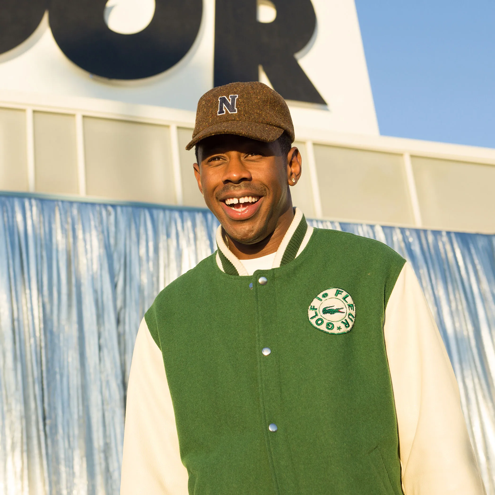

Hallo, mijn naam is Emily Broeksema!
Emily Broeksema's Hobbies!
Mijn hobbies zijn gamen, lezen en muziek luisteren.
Klik op de afbeeldingen voor meer informatie over de afbeeldingen!
Een game dat ik heel erg veel speel is Roblox. Ik speel Roblox al sinds 2018 en kan er niet mee stoppen.
Naast Roblox speel ik ook soms Minecraft, Fortnite en Apex Legends.
Wanneer ik eindelijk stop met gamen of voordat ik ga slapen hou ik er erg van om nog wat te lezen.
Op Wattpad lees ik graag romantische verhalen.
Soms snap ik niet hoe mensen niet naar muziek luisteren 24/7! Zonder muziek is leven echt saai.
Ik luister elke dag naar Spotify! Mijn favoriete artiest is Tyler the TylerTheCreator.

Deze pagina is gemaakt door Emily Broeksema